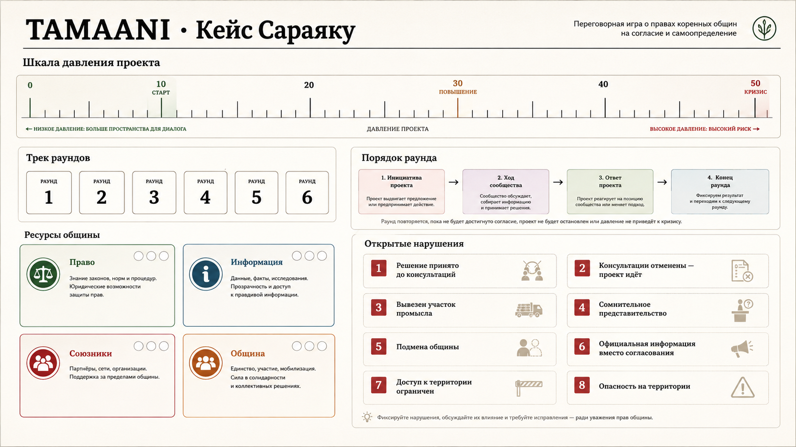

Мы переработали ядро игры. Вместо трёх абстрактных показателей — «Прогресс проекта», «Качество согласия» и «Ущерб» — прототип теперь построен вокруг одного реального дела и одной шкалы, за которой действительно интересно следить.
Один кейс вместо абстракции
Текущая версия основана на деле народа кичва Сараяку против Эквадора: концессия на нефтедобычу была выдана на их территории без консультаций. Партия начинается там же, где начинается реальная история — с уже нарушенного согласия. Каждый раунд — это эпизод из реальной хронологии дела, а не случайно сгенерированное событие.
Одна шкала — давление проекта
«Давление проекта» — единственный показатель, который отслеживает партия, от 0 до 50. Он растёт от каждого хода компании и понемногу ползёт вверх сам по себе с каждым раундом — быстрее, если остаются незакрытые нарушения согласия. Победа общины — довести давление до 10 и ниже. При 50 проект проходит точку невозврата.
Ресурсы, которые не восстанавливаются
У общины четыре ресурса: Право, Информация, Союзники и Поддержка общины. Каждый ответный ход стоит один из них, и ни один не восполняется сам по себе. Это заставляет по-настоящему выбирать, чем пожертвовать, а не искать единственно правильный ответ.

Финал, который определяют факты
Партия заканчивается, когда давление падает до 10, поднимается до 50 или останавливается фасилитатором для разбора. В любом случае игра завершается тем, что произошло в реальности — включая решение Межамериканского суда по правам человека 2012 года, признавшего нарушение прав общины Сараяку.